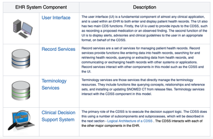

Part 1: EHR Data
Overview of the EHR Technology Ecosystem
At its most basic level, an electronic health record (EHR) is a digital version of a patient’s paper medical chart. EHRs are real-time, patient-centered records that make information available instantly and securely to authorized users.
- EHRs are typically operated by a healthcare practice or system and consolidate inputs by multiple providers within that system including physicians from differing specialties, nurses, and more that engage with a patient over the time they are receiving care into a single consolidated record.
- An EHR may include all the key administrative clinical data relevant to that persons’ care received through the health system, including demographics, progress notes, problems, medications, vital signs, past medical history, immunizations, laboratory data and radiology reports. These data may be in the form of both structured data (e.g., lab results) or unstructured data (e.g., clinical notes).
Note
Additionally, an EHR system is built to go beyond standard clinical data collected in a provider’s office and can be inclusive of a broader view of a patient’s care by incorporating data from external care providers, as well as integrating with clinical decision support and other supplemental data sources to enhance an understanding of a patient’s wellbeing.
EHR Technical Architecture
To better understand the data elements contained in an EHR, it is important to understand the logical architecture of an EHR system. This section describes the major architectural components of an EHR system, and the interactions between these components.

Source https://confluence.ihtsdotools.org/display/DOCCDS/2.1.+EHR+System+Architecture
Access and Regulatory Considerations
Given the highly sensitive nature of data potentially contained within EHR, significant regulatory and programmatic considerations come into play.
If you're interested in learning more, check out below:
PII and PHI Infomation and Concnerns
- Before potentially accessing EHR data, it is important to note that such information is considered highly sensitive and is subject to considerable safeguards. Specifically, much of the data contained within an EHR carries a legal designation of Protected Health Information (PHI).
- The Health Insurance Portability and Accountability Act of 1996 (HIPAA), and the Standards for Privacy of Individually Identifiable Health Information (Privacy Rule) issued by HHS to implement it, protects all "individually identifiable health information" held or transmitted by a covered entity or its business associate, in any form or media, whether electronic, paper, or oral.
- Individually identifiable health information” is information, including demographic data, that relates to:
- the individual’s past, present or future physical or mental health or condition,
- the provision of health care to the individual, or
- the past, present, or future payment for the provision of health care to the individual, and that identifies the individual or for which there is a reasonable basis to believe it can be used to identify the individual.
- Individually identifiable health information includes many common identifiers (e.g., name, address, birth date, Social Security Number).
- Read more about the privacy rule here: https://www.hhs.gov/sites/default/files/privacysummary.pdf
- https://www.healthit.gov/sites/default/files/pdf/privacy/onc_privacy_and_security_chapter4_v1_022112.pdf
HIPAA and other regulatory considerations
- Several central tenets of the Privacy Rule are:
- In general, authorized healthcare professionals may use or disclose protected health information for the purposes of treatment, payment, and health care operations without obtaining a patient’s written permission.
- For other purposes, including research, one may need to obtain an individual’s authorization to use PHI.
- Accessing PHI from a third-party institution will likely require formalized business associate arrangement or data use agreements that must require all parties to comply with HIPAA, including breach notification requirements.
- Generally, access to, use of, and disclosure of protected health information must be kept to the minimum necessary to carry out an action. This is called the “minimum necessary rule.”
Data Composition
What information is contained in an EHR record can often be mapped to a patient’s flow through a medical system. While each encounter may vary drastically based on type and severity, it can typically follow the following generalized progression:
- Intake (when a patient first arrives at their out-patient or in-patient encounter
- Information collected at this juncture will typically handled by nurses or support staff and will include medical histories, vital signs, demographics, etc.
- Diagnostic Encounter (a patient will then typically be seen by one or more healthcare provider(s) for diagnostic purposes)
- Information collected at this juncture may update previously gathered data, incorporate additional test results, diagnoses, record new procedures performed, and well as prescriptions for additional tests, medication, or procedures
- Therapeutic Encounter (If the patient advances to a remedial step in their treatment this will occur now. Steps may include the disbursement of medication, procedures including surgical interventions, and therapetic recovery steps.
- Information collected at this juncture will include ongoing vitals and diagnostic testing, procedures and associated outcomes, prescriptions orders and fulfillment notifications, etc.
Processes can vary dramatically
It should also be noted that these steps are not always a uniformly linear progression as patients may cycle back and forth through varying steps depending on their particular set of circumstances.
An EHR will contain all contains patient health information accumulated through this process, such as:
- Administrative and billing data
- Patient demographics
- Progess notes
- Vital signs
- Medical histories
- Diagnoses
- Medications
- Immunization dates
- Allergies
- Radiology images
- Lab and test results
It can be helpful to explore example EHR records in further detail to better understand what information they contain. In lieu of access to actual PHI, the Synthea project can come in handy.
To find out more about Synthea check here
- Synthea is a Synthetic Patient Population Simulation that is used to generate the synthetic patients. Synthea outputs synthetic, realistic (but not real) patient data and associated health records in a variety of formats.
- Access Synthea project datasets here: https://synthea.mitre.org/about
Codes and Medical Terminology
When dealing with EHR data you will likely encounter two types: structured and unstructured. Unstructured data, typically taking the form of encounter notes, audio, video, or image files has its own set of significant challenges, and will be out of scope for this tutorial.
Structured data, in-contrast, is, as the name suggests, restricted to heavily formatted data-types and structures. This could include text fields like name, regular-expressions, like phone number, and alpha-numeric coding terminology.
We'll look at a handful of specific coding standards relevant to interoperability. Specifically:
- LOINC
- CPT
- SNOMED
- ICD-10
- RxNorm
LOINC
The Logical Observation Identifiers Names and Codes (LOINC®), is a proprietary clinical terminology that is important for laboratory test orders and results, and is one of a suite of designated standards for use in U.S. Federal Government systems for the electronic exchange of clinical health information.
Managed by the Regenstrief Institute, LOINC has been identified by the HL7 Standards Development Organization as a preferred code set for laboratory test identification in transactions between health care facilities, laboratories, laboratory testing devices and public health authorities.
LOINC codes are dvidied into Test Order and Test Result codes.
Test Order Code Structure and Examples
Test Order codes are 5 digit numeric codes appended with a dash and 6th number. Form: XXXXX-X
e.g.,
Factor X Inhibitor Profile, Professional Interpretation | 69049-5
Additional attributes associated with LOINC test codes are:
- Test ID
- Test Order Name
- Order LOINC Code
- LOINC Attributes
- Method name
e.g.
| Test ID | Test Order Name | Order LOINC Code | LOINC Attributes | Method Name |
|---|---|---|---|---|
| 10AIH | Factor X Inhibitor Profile, Professional Interpretation | 69049-5 | Coagulation specialist review:Imp:Pt:XXX:Nar: | Only orderable as a reflex. For more information see 10INE / Factor X Inhibitor Evaluation, Plasma. Medical Interpretation |
Test Result Code Structure and Examples
LOINC Test Result codes are also 5 digit numeric codes appended with a dash and 6th number. Form: XXXXX-X
Additional attributes associated with LOINC Test Result codes are:
- LOINC Values Updated
- Test ID
- Test Order Name
- Result ID
- Result LOINC Code
- LOINC Attributes
- Method Name
| LOINC Values Updated | Test ID | Test Order Name | Result ID | Test Result Name | Result LOINC Code | LOINC Attributes | Method Name |
|---|---|---|---|---|---|---|---|
| 2022-03-11 | CNSA | Central Nervous System Consultation, Autopsy, Varies | 71070 | Interpretation | 18743-5 | Autopsy report:Find:Pt:{Setting}:Doc:{Role} | Includes hermatoxylin and eosin stains. Additional special stains or procedures necessary for diagnosis will be billed separately. |
For more information on LOINC codes
Additonal infomration on the LOINC coding terminology is available here: https://loinc.org
Knowledge Check: Where would I look to find details on the specific LOINC code?
The Method name attribute provides additional details on the specific LOINC code.
CPT
Current Procedural Terminology (CPT) codes are numbers assigned to each task and service a healthcare provider offers. They include medical, surgical, and diagnostic services. Insurers use the numbers to determine how much money to pay a provider.
Code Similarities
They are similar to codes from the Healthcare Common Procedure Coding System (HCPCS) used for Medicare reimbursements
CPT codes are developed, maintained, and copyrighted by the American Medical Association (AMA).
CPT Code Structure and Examples
A CPT code is a five-digit numeric code. It has no decimal marks. Some have four numbers and one letter
There are several categories of CPT codes, including:
- Category I: Procedures, services, devices, and drugs, including vaccines
- Category II: Performance measures and quality of care
- Category III: Services and procedures using emerging technology
- PLA codes, which are used for lab testing
Here are some examples:
99214may be used for an office visit99397may be used for a preventive exam if you are over 6590658indicates a flu shot90716may be used for the chickenpox vaccine (varicella)12002may be used when a healthcare provider stitches up a 1-inch cut on your arm
It should also be noted that some CPT codes indicate bundled services. That is, one code describes several services performed together.
For more information on CPT codes
- Updated list of codes: https://www.cms.gov/Medicare/Fraud-and-Abuse/PhysicianSelfReferral
- CPT code lookup tool: https://www.aapc.com/codes/cpt-codes-range/
SNOMED
Systemized Nomenclature of Medicine – Clinical Terms or SNOMED CT® is a standardized, international, multilingual core set of clinical healthcare terminology that can be used in EHR.
SNOMED International is the non-profit standards development organization that creates and distributes SNOMED CT, and it is operated by the International Health Standards Development Organization.
SNOMED CT is a critical part of interoperability
SNOMED CT is one of a suite of designated standards for use in U.S. Federal Government systems for the electronic exchange of clinical health information and is also a required standard in interoperability specifications of the U.S. Healthcare Information Technology Standards Panel.
SNOMED CT Code Structure and Examples
SNOMED CT codes are numerical and are a minimum of six digits long.
For instance, 271737000 is the code for anemia (disorder).
For more information on SNOMED CT codes
Resources and code look ups here: https://www.nlm.nih.gov/healthit/snomedct/index.html
ICD-10
ICD-10 is the 10th revision of the International Statistical Classification of Diseases and Related Health Problems (ICD), a medical classification list by the World Health Organization (WHO).
For disease reporting, the US utilizes its own national variant of ICD-10 called the ICD-10 Clinical Modification (ICD-10-CM). A procedural classification called ICD-10 Procedure Coding System (ICD-10-PCS] has also been developed for capturing inpatient procedures] The ICD-10-CM and ICD-10-PCS were developed by the Centers for Medicare and Medicaid Services(CMS) and the National Center for Health Statistics (NCHS)
ICD-10 Code Structure and Examples
ICD-10-CM codes may consist of up to seven digits, with the seventh digit extensions representing visit encounter or sequelae for injuries and external causes.

Example codes:
E08.22, Diabetes mellitus due to an underlying condition with diabetic chronic kidney diseaseT81.535, Perforation due to foreign body accidently left in body following heart catheterization- Code extensions (seventh character) have been added for injuries and external causes to identify the encounter: initial, subsequent, or sequela. The extensions are:
AInitial encounterDSubsequent encounterSSequelae
For more information on ICD-10 codes
RxNorm
RxNorm is a normalized naming system for generic and branded drugs; and a tool for supporting semantic interoperation between drug terminologies and pharmacy knowledge base systems. It does this by providing normalized names for clinical drugs and links its names to many of the drug vocabularies commonly used in pharmacy management and drug interaction software, including those of First Databank, Micromedex, and Gold Standard Drug Database. By providing links between these vocabularies, RxNorm can mediate messages between systems not using the same software and vocabulary.
The National Library of Medicine (NLM) produces RxNorm. Source: https://www.nlm.nih.gov/research/umls/rxnorm/overview.html
RxNorm also provides a set of codes for clinical drugs, which are the combination of active ingredients, dose form, and strength of a drug.
- For example, the RxNorm code for ciprofloxacin 500 mg 24-hour extended-release tablet (the generic name for Cipro XR 500 mg) is
RX10359383, regardless of brand or packaging. - https://www.sciencedirect.com/topics/medicine-and-dentistry/rxnorm
- This is in contrast to the National Drug Code (NDC) system. If more than one manufacturer produces the same medication, each assigns different NDCs. In contrast, the RxNorm vocabulary creates standard names and identifiers for the combinations of ingredients, strengths, and dose forms.
For more information on RxNorm codes
- https://www.nih.gov/news-events/news-releases/drug-naming-standard-electronic-health-records-enhanced
Key Point: Why this matters:
EHR are a vast resource of information, chronicling an individual’s health. Significant work has gone into standardizing this information into a uniform set of coding terminologies that ultimately enable interoperability by ensuring that health records can be interpreted across providers and patients. Understanding these terminologies and the information types contained within them is a critical first step to unlocking access to this data.
Knowledge Check: What code systems are used to identify clinical measurements?
LOINC
Knowledge Check: What code systems are used to identify medications?
RxNorm NDC (if we want to add this one)
Knowledge Check: What code systems are used to identify procedures?
- CPT
- HCPCS
- SNOMED
Knowledge Check: What code systems are used to identify diagnoses?
- SNOMED
- ICD-10